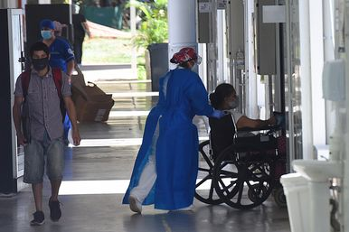
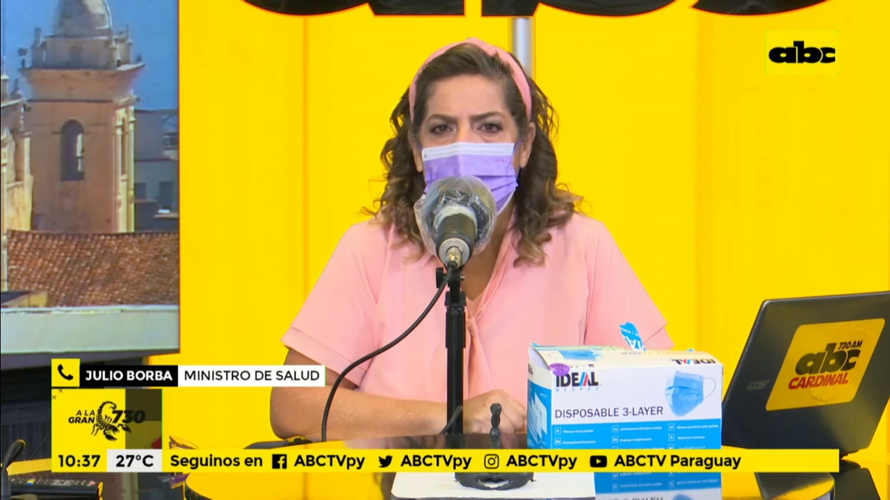

Variante brasileña no es más letal, pero sí se contagia más fácil y rápidamente, advierte ministro de Salud
El ministro de Salud, Julio Borba, dijo este jueves que la variante brasileña del coronavirus, que ya circula en Paraguay, no es más letal, sino que su propagación es más rápida y fácil.Esto, a la larga, podría derivar en más contagios, lo que a su vez generaría aún más colapso del sistema de salud.Además, señaló que las personas que ya tuvieron COVID pueden volver a contagiarse con esta y otras variantes.
Borba conversó hoy con ABC sobre la confirmación de la circulación de la variante 'P1' del coronavirus, originada en Manaus, Brasil.El ministro de Salud indicó que probablemente ya circula desde hace tiempo en el Paraguay y que, junto a la irresponsabilidad ciudadana al no cumplir las medidas sanitarias impuestas, podría ser uno de los factores que generaron la disparada de casos en las últimas semanas.
Lea más: Se confirma presencia de cepa Manaos, y se reportan 51 muertos
'Teníamos la sospecha clínica de que ya estaba circulando y ayer tuvimos la confirmación.Estas dos personas (en las que fue detectada la variante) no viajaron (…) Es una circulación comunitaria ya desde hace tiempo', informó.

El Dr.Borba explicó que esta cepa es 'mucho más contagiosa' y que 'no aumenta la mortalidad directamente'.Sin embargo, resaltó que, 'al ser más contagiosa', indirectamente puede derivar a más pacientes graves al sistema de salud.
'Al ser más contagiosa hay más casos positivos y, considerando que el 80% pasa como una gripe o asintomáticos, sin atención médica, que hay un 15% que sí va a requerir atención médica y un 5% que sí va a requerir terapia (…) Allí está nuestra preocupación', enumeró.
El ministro hablo de un sistema 'abrumado' que podría verse más colapsado al haber más contagios.También indicó que todavía se desconoce cuánto tiempo de inmunidad da esta cepa brasileña y que aguardan datos desde ese país.
Lea más: Advierten que mala calidad del aire y mucha gente en espacios cerrados facilitan contagio de COVID
En ese contexto, pidió que la gente que está recuperada del virus se siga cuidando porque no solo puede contagiar a otras personas de forma indirecta (al ser asintomático, por ejemplo), sino que también ellas mismas pueden volver a infectarse y sufrir secuelas más graves de la enfermedad de las que en principio pudieron haber sufrido.
'La gente no tiene que creerse Highlander', dijo en referencia al personaje de cine que es inmortal en las películas y series de los años ’80 y ’90.'(Que se hayan recuperado) no implica que tengamos que dejar de cuidarnos bajo ningún punto de vista', sostuvo.
En relación a las vacunas, adelantó que el domingo se recibirían las primeras 100.000 dosis de las vacunas indias Covaxin, que serán guardadas de momento hasta que se tenga la aprobación de las entidades certificadoras de México y Brasil.Para el próximo domingo, 4 de abril, se espera otro cargamento de 100.000 de esas vacunas y luego 500.000 por semana, hasta completar 2.200.000 dosis, de las cuales Paraguay comprará 2.000.000 y recibirá 200.000 como donación.
'Se está usando masivamente en la India, que es una potencia atómica, en varios países del Medio Oriente, en tres o cuatro países de Centroamérica.Necesitamos la autorización de las entidades de vacunas de México y Brasil.Ya hay un visto bueno de las autoridades mexicanas', contó.
Lea más: Acevedo dice que vendrán las vacunas
También indicó que desde el lunes estaría disponible un cupo de 200.000 dosis de la Sputnik V, de las cuales Paraguay compró 1.000.000 de dosis.Sin embargo, explicó que esas vacunas 'hay que ir a traer' y que están estudiando la logística para transportarlas hasta nuestro país.
Finalmente, manifestó que 'no nos va a ganar este bicho', pero que prevenir los contagios es 'una lucha de todos, todos tenemos que hacer el esfuerzo'.
Hasta ayer, la cantidad de decesos por la enfermedad llegó a 3.869, con 51 fallecidos en las últimas 24 horas.Hay 1.983 internados, 413 en terapia intensiva.La cantidad de casos confirmados desde el 7 de marzo del año pasado es de 200.823, con 164.401 recuperados.

Posted On: 2021-03-25T13:58:00
Posted By: ABC COLOR
Content Date: 2021-03-25
Download Date: 2021-09-16
Document ID: L0C04G9P7